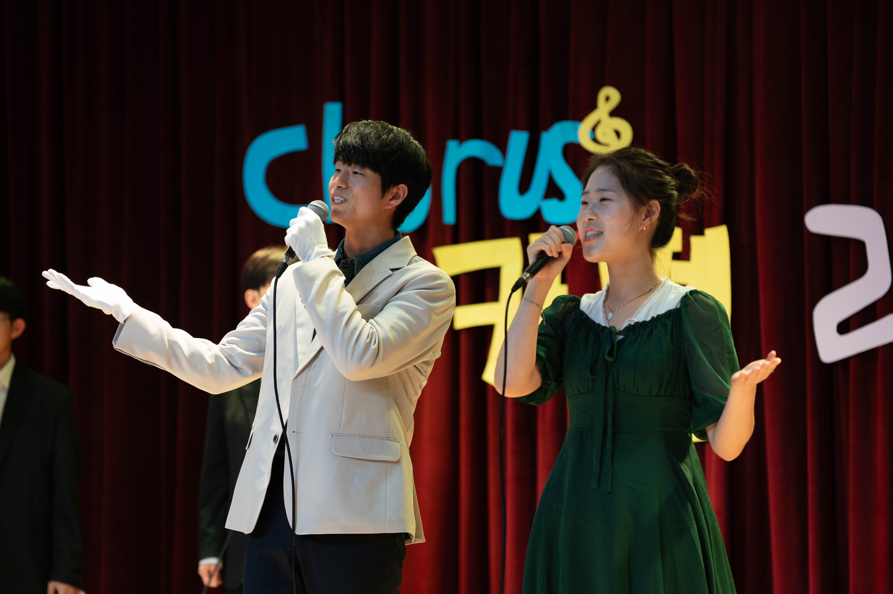
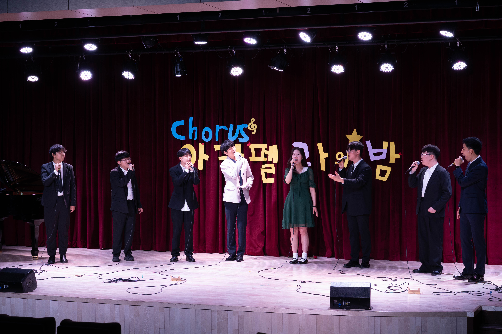
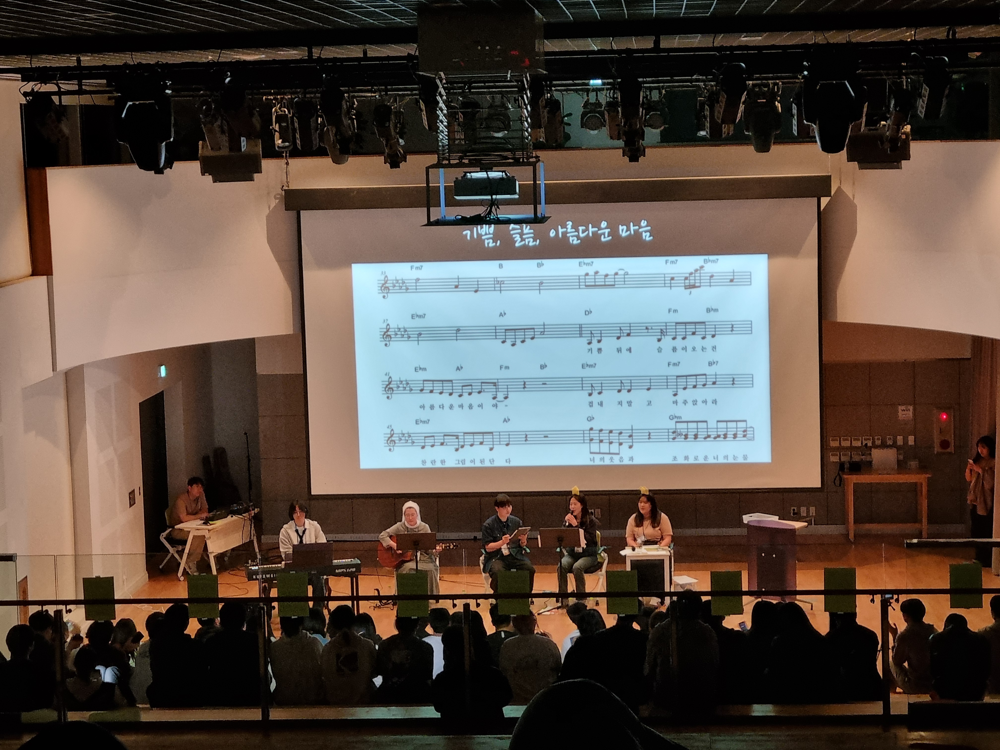

About
I'm a master's student in Chemical and Biomolecular Engineering at KAIST, in the Systems Biology and Medicine Lab. I work at the intersection of bioprocess engineering and machine learning — building models that read microbial systems (DNA, strains, media, and live process signals) to predict what a cell will express, and how to steer a fermenter toward it.
My current research develops multimodal deep learning for condition-aware gene and biosynthetic-gene-cluster (BGC) expression, and time-series models for forecasting and controlling industrial fermentation. Before graduate school I earned my BSc in Biomedical Engineering at Georgia Tech and worked as a process engineer at Samsung Biologics, validating GMP biologics manufacturing at 15,000-litre scale — experience that grounds how I design models for real bioprocesses.
The best way to reach me is by email at soominhlee@gmail.com.
📍 I'm a 2026 Google Summer of Code contributor with EMBL-EBI (Ensembl), automating genome-assembly metadata curation from the scientific literature.
News
- 🧬May '26Joined Google Summer of Code with EMBL-EBI (Ensembl), building an LLM pipeline to automate genome-assembly metadata curation.
- 🗣️Apr '26Gave an oral presentation at KSBB on a multimodal model for condition-aware gene expression prediction.
- 📖Oct '25Contributed a chapter, Artificial Intelligence for Multiscale Biological System Design and Optimization, to Comprehensive Biotechnology (4th ed.).
- 🗣️Apr '25Presented my 2,3-butanediol fermentation forecasting work at KSBB.
- 🎓Feb '25Began my MS at KAIST in the Systems Biology and Medicine Lab.
Research
Condition-aware gene & BGC expression prediction
A Transformer-based multimodal framework that predicts condition-dependent microbial gene and biosynthetic-gene-cluster expression, fusing DNA-sequence features, enzyme-domain embeddings (Transformer / GCN), regulatory elements, host EC profiles, and media composition. Trained on large-scale RNA-seq–derived regulation datasets with imbalance-aware optimization, toward natural-product discovery and precision metabolic engineering.
Forecast-driven control of 2,3-butanediol fermentation
BiLSTM and Transformer time-series models for industrial 2,3-BDO fermentation, developed with GS Caltex. Genotype embeddings for 250 strains, medium-composition vectors, and dynamic process parameters across 1,175 batches (664k data points) reach 3.14% relative MAE; a forecast-driven controller recommends constrained RPM setpoints in real time, preventing over 55% of predicted titer-drop events.
Automating genome-assembly metadata curation
A model-agnostic LLM pipeline (Google Summer of Code, EMBL-EBI) that extracts genome-assembly metadata — ploidy, sex, and strain — from primary literature for Ensembl. An evidence-first schema pairs every value with a verbatim source quote and a confidence level, so curators can triage results and catch hallucination.
Publications & Presentations
Background
Experience
- Contributor, Google Summer of CodeEMBL-EBI (Ensembl)2026 – present
- MS Researcher, Systems Biology & Medicine LabKAIST2025 – present
- Process EngineerSamsung Biologics · Plant 5, GMP2024 – 2025
- Undergraduate Researcher, Champion LabGeorgia Institute of Technology2023 – 2024
- R&D Summer InternSamsung Biologics2023
Honors
- Best Oral Award, 16th Chemical and Biomolecular Engineering Graduate Student Symposium · May 2026
- Kim Young-Han Global Leader Scholarship · 2026
- Millennium Fellowship · 2023
- Teams for Tech Fellowship · 2023
- President's Undergraduate Research Travel Award · 2023
- Aspirations in Computing, NCWIT — Honorable Mention · 2020
Hobbies
- Singing: Acapella, Musical, etc.
- Playing music instruments: Piano, ukulele, flute, etc.


